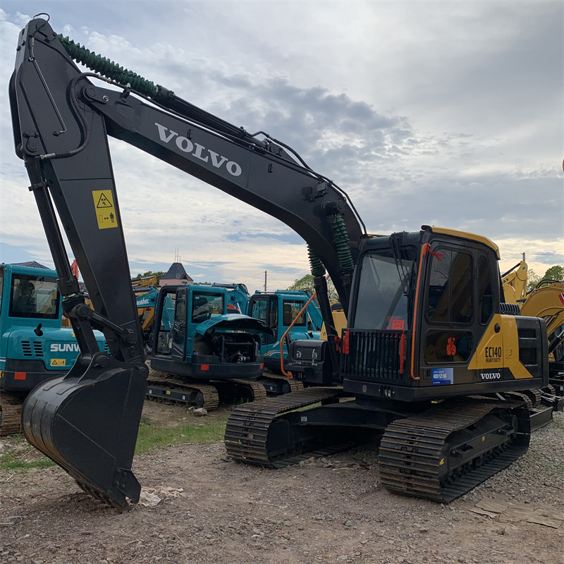

Refurbished Volvo EC140 Excavator
The Volvo EC140 is a compact yet powerful mid-sized hydraulic excavator, designed to meet the demands of a wide range of industries, including construction, landscaping, utilities, and demolition. Known for its reliability, fuel efficiency, and outstanding performance, the EC140 is a versatile machine that can handle various tasks, from digging and lifting to grading and trenching. For those looking to save costs without sacrificing quality, a refurbished Volvo EC140 offers a great balance of affordability and high performance.
Honestly, it's almost impossible to buy a brand new excavator from China. They either don't exist or are made in China. If a Chinese seller tells you their Caterpillar/Komatsu/Volvo/Kobelco/Hitachi is brand new, they're lying. Therefore, a refurbished excavator is your best bet.

Here are the detailed specifications for a refurbished Volvo EC140BLC or EC140E excavator:
Operating Weight and Dimensions
- Operating Weight: 13,800–14,500 kg
- Transport Length: ~7.6–7.9 meters
- Transport Width: ~2.5–2.6 meters
- Transport Height: ~2.8–3.0 meters
- Tail Swing Radius: ~2.2–2.4 meters
- Ground Clearance: ~420–450 mm
- Track Width: 500 mm standard
Engine and Powertrain
- Engine Model:
- EC140BLC: Volvo D4D EBE2 (Tier 2 compliant)
- EC140E: Volvo D4J (Tier 4 Final compliant)
- Rated Power Output:
- EC140BLC: ~69 kW (93 hp) @ 2,000 rpm
- EC140E: ~90–95 kW (121–127 hp) @ 2,000 rpm
- Maximum Torque: ~400–450 Nm
- Fuel Tank Capacity: ~250–280 liters
- Travel Speed: 3.0–5.0 km/h
- Swing Speed: ~10 rpm
- Gradeability: Up to 35°
Hydraulic System
- Main Pump Type: Variable displacement axial piston pumps
- Flow Rate: ~2 × 140–160 L/min
- System Pressure: Up to 31.5–34.3 MPa
- Hydraulic Oil Capacity: ~200–220 liters
- Boom/Arm/Bucket Priority: Load-sensing with flow sharing
- Regeneration System: Improves simultaneous operations and cycle speed
Performance Metrics
- Bucket Capacity: 0.5–0.7 m³ (SAE heaped)
- Max Digging Depth: ~5.5–5.8 meters
- Max Reach (Horizontal): ~8.5–8.8 meters
- Max Dump Height: ~5.6–5.8 meters
- Bucket Digging Force: ~100–110 kN
- Arm Digging Force: ~70–75 kN
Cab and Operator Features
- Cab Type: ROPS/FOPS certified
- Display: LCD monitor with diagnostics and fuel tracking
- Controls: Pilot-operated joysticks with auxiliary hydraulic circuit
- Comfort: Air suspension seat, climate control, low vibration cab
- Visibility: Wide glass area, rear-view camera, LED work lights
Smart Features and Efficiency
- Fuel Efficiency:
- Auto idle and engine shutdown
- ECO mode with load-sensing hydraulics
- Emissions Control:
- EC140BLC: Tier 2 (no DPF/SCR)
- EC140E: Tier 4 Final (DPF + SCR + EGR)
- Telematics Ready: Volvo CareTrack system (optional on EC140E)
Attachments Compatibility
- Standard Bucket: 0.5–0.7 m³
- Optional Tools: Hydraulic breaker, auger, compactor, ripper
- Quick Coupler: Hydraulic or manual options available
Refurbishment Scope
Refurbished EC140 units typically include:
- Engine Overhaul: Turbocharger, injectors, seals, cooling system
- Hydraulic Restoration: Pump recalibration, valve block testing, hose replacement
- Electrical Diagnostics: Monitor, sensors, wiring harness
- Cab Reconditioning: Seat, joysticks, HVAC, repainting
- Structural Repairs: Boom/bucket welding, bushing replacement, undercarriage rebuild
Overview of the Volvo EC140 Excavator
The Volvo EC140 is designed to provide excellent power and performance in a compact package. It combines high fuel efficiency with low emissions, offering a productive and environmentally friendly solution. Whether you need a reliable machine for everyday tasks or something versatile for specialized applications, the EC140 is built to meet the challenge.
Key Specifications of the Volvo EC140
-
Operating Weight: Approximately 14,000 kg (30,800 lbs)
-
Engine Power: Around 92 kW (123 hp)
-
Max Digging Depth: Up to 5.6 meters (18.4 feet)
-
Max Reach: Approximately 8.5 meters (27.9 feet)
-
Bucket Capacity: Ranges between 0.4 to 0.6 cubic meters (14.1–21.2 cubic feet)
-
Fuel Tank Capacity: About 220 liters (58.2 gallons)
-
Travel Speed: Up to 5.3 km/h (3.3 mph)
With these specifications, the EC140 is capable of handling a variety of heavy-duty tasks, from simple digging to more complex applications that require precision and power. This makes the machine highly adaptable to different construction projects.
Engine and Fuel Efficiency
The Volvo EC140 is powered by a Volvo D5E engine, which is known for its efficiency, performance, and low fuel consumption. This engine is built to deliver robust power while minimizing environmental impact, making it ideal for projects that require long hours of operation.
-
Fuel-Efficient Performance: The EC140’s engine is designed to reduce fuel consumption without compromising power output. This makes the machine an ideal choice for projects where fuel costs can significantly impact the bottom line.
-
Low Emissions: Compliant with current emission standards, the EC140 helps meet environmental regulations while ensuring smooth operation in urban or environmentally sensitive areas.
-
Reliable Power: The D5E engine offers steady and reliable power, which is essential when working in demanding conditions. It is optimized to provide consistent performance over long periods, reducing the need for frequent maintenance and repairs.
Hydraulics and Performance
The Volvo EC140 features an advanced hydraulic system that provides excellent performance across various tasks, including digging, lifting, and grading. The hydraulics are designed for precise control and efficient energy use, ensuring high productivity even under tough working conditions.
-
Efficient Hydraulic System: The EC140 uses load-sensing hydraulics, which ensure that hydraulic flow is adjusted based on the work being done. This system optimizes fuel efficiency, reduces energy waste, and improves overall performance.
-
Powerful Hydraulic Flow: The hydraulic system supports a wide range of attachments, from standard buckets to specialized tools like hammers, augers, and grapples. This makes the EC140 highly versatile for various industries.
-
Reduced Cycle Times: The efficient hydraulic system allows for shorter cycle times, increasing the speed at which the excavator can perform repetitive tasks. This improves overall productivity, particularly in time-sensitive projects.
Durability and Construction
The Volvo EC140 is engineered to provide long-lasting durability and strength. The machine’s design focuses on heavy-duty construction to ensure that it can withstand the demands of tough work environments.
-
Heavy-Duty Underframe: The undercarriage of the EC140 is built for tough conditions, with reinforced components that are designed to withstand rough terrain and long working hours. This helps minimize wear and tear and reduces the risk of costly repairs.
-
Sturdy Components: The frame, boom, and bucket are all constructed with high-strength steel, designed to resist cracking and damage. This robust construction ensures that the EC140 can perform demanding tasks without compromising structural integrity.
-
Extended Lifespan: With proper maintenance, the EC140 is built to last for many years, making it a wise investment for contractors who require a reliable and long-lasting machine.
Operator Comfort and Safety
Volvo is known for prioritizing operator comfort and safety, and the EC140 is no exception. The excavator’s cabin is designed to provide a comfortable and ergonomic working environment, even for long hours.
-
Spacious, Ergonomic Cab: The cab features ample space, a well-placed control layout, and an adjustable seat to ensure operator comfort. This reduces fatigue during extended shifts, improving both productivity and safety.
-
Visibility: The EC140’s cab is designed for excellent visibility, with large windows and a slim boom profile that provide clear sightlines to the work area. This enhanced visibility helps reduce the risk of accidents and improves the operator’s ability to work efficiently.
-
Safety Features: The EC140 is equipped with a Roll-Over Protective Structure (ROPS), Falling Object Protective Structure (FOPS), and a safety lockout system. These features ensure that the operator remains protected in the event of a rollover or falling debris.
Refurbished Volvo EC140: A Cost-Effective Investment
Choosing a refurbished Volvo EC140 is an excellent way to get reliable performance at a lower price. Refurbished machines undergo thorough inspection and repairs, ensuring that they perform as well as new models while offering significant cost savings.
-
Lower Purchase Cost: A refurbished EC140 is generally priced lower than a new machine, making it a more affordable option for small contractors or businesses looking to expand their fleet without breaking the bank.
-
Quality Assurance: Refurbished machines are inspected, repaired, and restored to factory standards by qualified technicians. This ensures that the machine is in excellent condition, ready to perform at optimal levels.
-
Warranty and Support: Many refurbished machines come with warranties and after-sales support, offering peace of mind and reducing the risk of unexpected repair costs.
Maintenance Tips for the Volvo EC140
To maximize the lifespan and performance of the Volvo EC140, regular maintenance is essential. Here are some tips to keep the machine running smoothly:
-
Engine Maintenance: Regularly check the engine oil levels and replace the oil filter as required. The engine should be inspected for leaks, and air filters should be cleaned or replaced as necessary.
-
Hydraulic System: Keep the hydraulic fluid clean and change it at regular intervals. Check the hydraulic hoses, pumps, and cylinders for wear and leaks.
-
Undercarriage Maintenance: Inspect the undercarriage frequently, especially the tracks, rollers, and idlers. Proper lubrication and cleaning can prevent premature wear.
-
Cab and Safety: Clean the cab regularly and inspect the safety features, including seat belts and ROPS/FOPS structures. Ensure that the operator’s environment is comfortable and safe.
Conclusion
The Volvo EC140 is a durable, efficient, and versatile machine that offers excellent performance for a wide range of tasks. Whether you're working on construction sites, utility projects, or landscaping jobs, this excavator is built to handle tough jobs with precision and ease. Opting for a refurbished Volvo EC140 gives you the opportunity to own a high-performance machine at a fraction of the cost of a new one, with the peace of mind that comes with a thorough inspection and restoration.
By choosing the EC140, businesses can achieve significant savings, enhance productivity, and ensure that their fleet is equipped with reliable, high-quality machinery that will serve them for years to come. With proper maintenance and care, the EC140 remains a valuable addition to any heavy equipment fleet.
Our Commitment
- 2 years / 4000 hours warranty.
- EPA certified.
- No sweatshop labor.
Contacts

- [email protected]
- Youtube Instagram Facebook
- Navigation: G206 (Sishu Bridge) in Changfeng County, Hefei City, Anhui Province, 200 meters north to the east